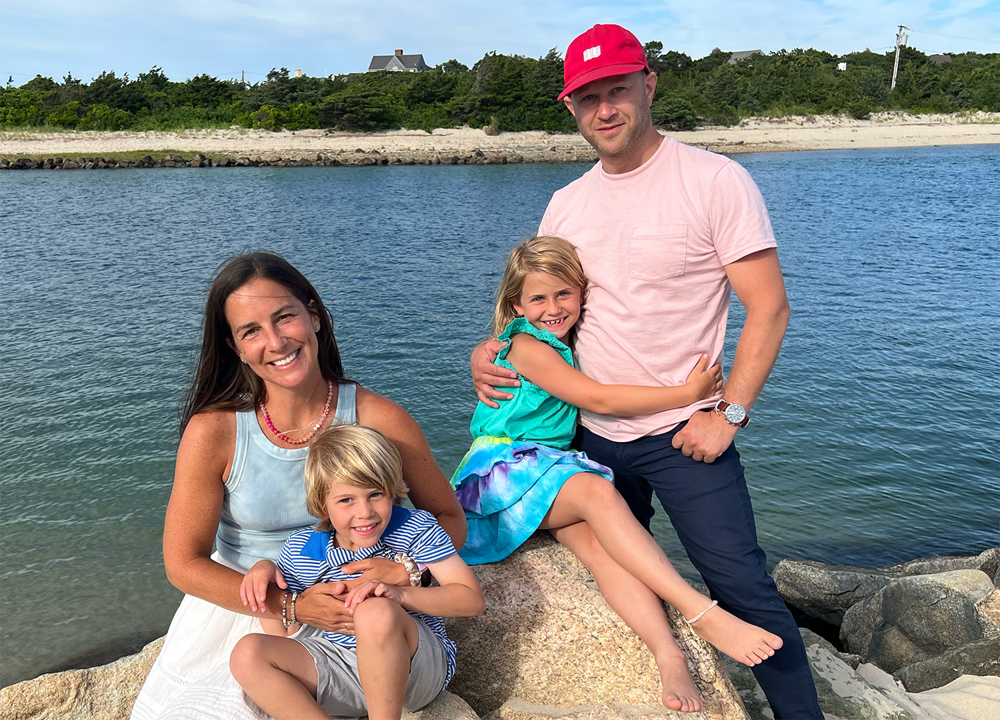

I've spent the last 15+ years turning ambiguous, half-formed problems into interfaces and brands people actually want to use.
I've worked across UI/UX design, product design, and brand identity — for scrappy startups figuring out their first product and household names shipping to millions. I'm not precious about staying in one lane: research one week, pixel-level UI the next, a full brand system the week after that. If it's design-shaped, I'm probably into it.
What hasn't changed across all of it: I care more about whether something actually works for the person using it than whether it looks impressive in a portfolio. The good design part usually follows once that's right.
Outside of work, I'm mostly outnumbered — chasing two kids around, usually somewhere near the water.